Image Gallery# We use Plotly as our backend for visualisation. It provides excellent graph interactivity in Jupyter notebooks. Alignments & Sequences# 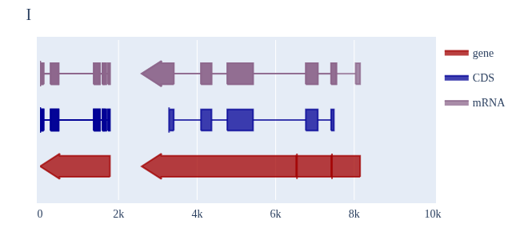 Sequence Features 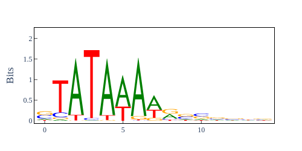 Sequence logos 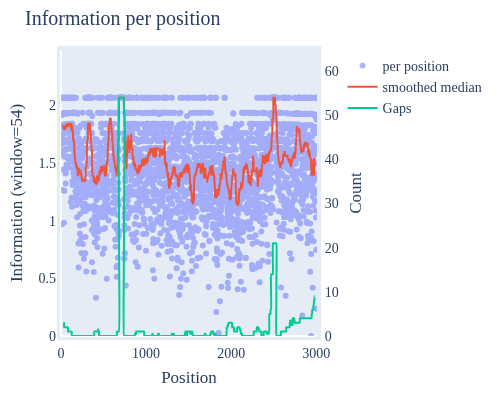 Information analysis of an alignment 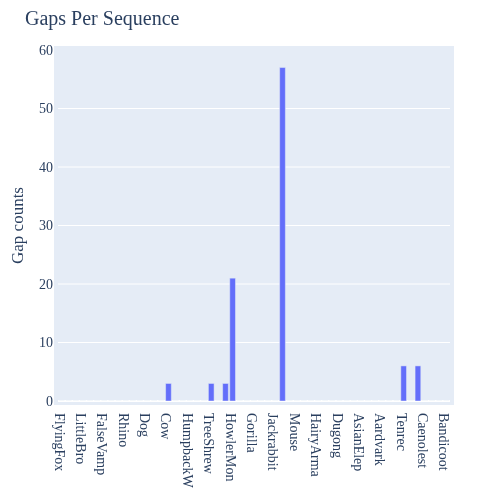 Counting gaps per sequence 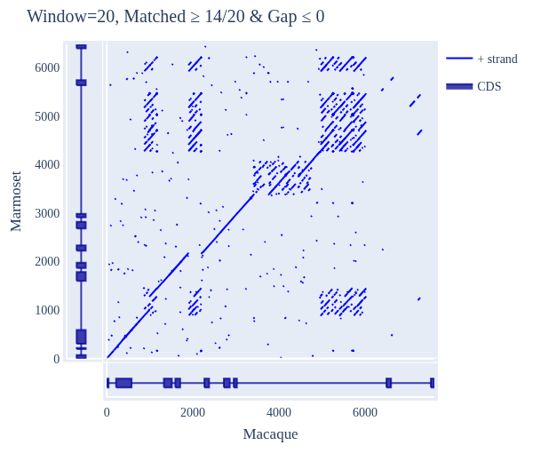 Dotplot with annotated sequences 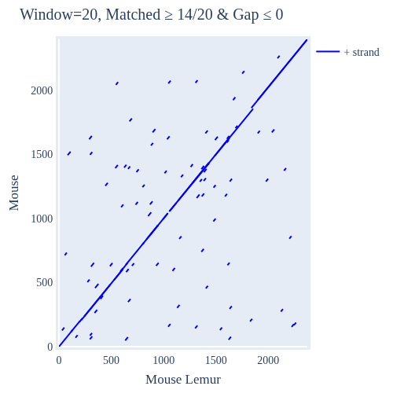 Dotplot basics 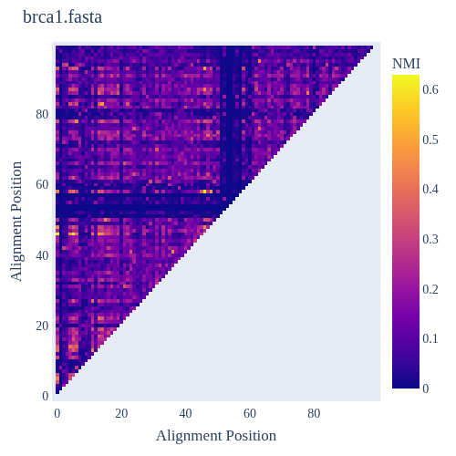 Coevolution analysis Phylogenetic Trees# 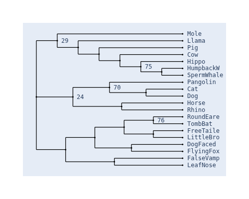 Showing Bootstrap Support 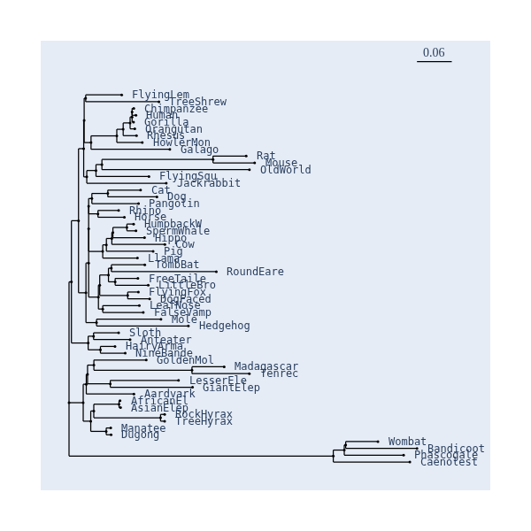 Square Dendrogram Style 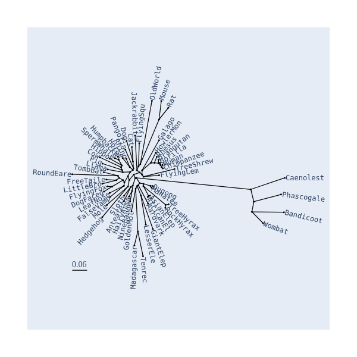 Radial Dendrogram Style 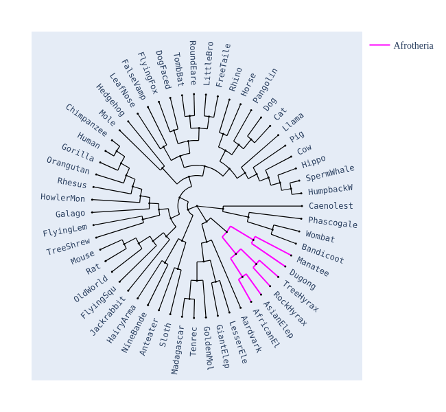 Circular Dendrogram Style 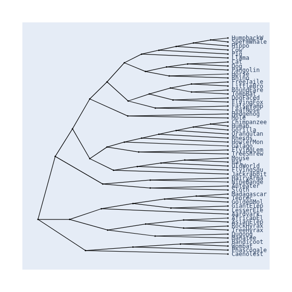 Angular Dendrogram Style